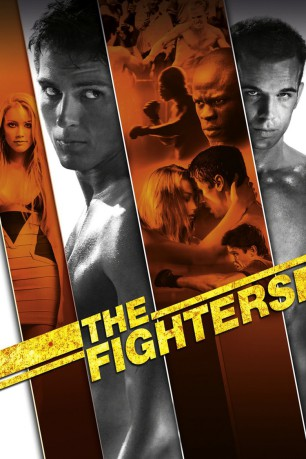
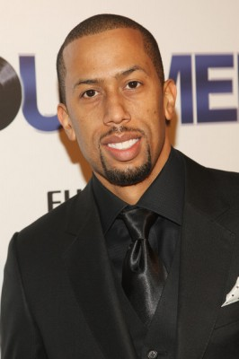

#3823 The Fighters
Alternativ: Never Back Down
 
 IMDB-Wertung: 6.6 / 10
IMDB-Wertung: 6.6 / 10  Metascore: 0
Metascore: 0 
Um seinen jüngeren Bruder bei seiner Tenniskarriere zu unterstützen, zieht Jake Tyler zusammen mit seiner Familie nach Orlando. In der neuen Stadt muss sich der einst angesehene Sportler zunächst zurechtfinden und erhofft sich auf einer Party seines Schwarms Baja Anschluss zu finden. Dort gerät er jedoch mit dem Raufbold Ryan aneinander, der ihm eine saftige Tracht Prügel verpasst. Kurz darauf erfährt er durch einen Schulkameraden von einem Kampfsport namens Mixed Martial Arts und lernt einen Trainer kennen. Dieser fördert Jake, bringt ihm Disziplin, Willensstärke und Kampftechniken bei und gibt ihm die Möglichkeit herauszufinden, wer er wirklich ist.
Jahr: 2008
Dauer: 113 Minuten
FSK: 18
Land: USA Studio: Summit DistributionTonspuren: DTS - ,
Untertitel: Deutsch,
Auflösung: 1080p (1920x800) Größe: 11571 MB
Genre: Action, Drama, Sport
Regisseur: Jeff Wadlow
Drehbuch: David Dorfman
Soundtrack:
Darsteller:
- Sean Faris als Jake Tyler
 Amber Heard als Baja Miller
Amber Heard als Baja Miller Cam Gigandet als Ryan McCarthy
Cam Gigandet als Ryan McCarthy Evan Peters als Max Cooperman
Evan Peters als Max Cooperman- Leslie Hope als Margot Tyler
 Djimon Hounsou als Jean Roqua
Djimon Hounsou als Jean Roqua- Wyatt Smith als Charlie Tyler
-  Affion Crockett als Beatdown DJ
 Neil Brown Jr. als Aaron
Neil Brown Jr. als Aaron- Lauren Leech als Jenny
- Steven Crowley als Ben
 Tom Nowicki als Mr. Lloyd
Tom Nowicki als Mr. Lloyd- Chris Lindsay als Beat Down Referee
- Patric Knutsson als Vocabulary Guy
- Cameron Francis als ER Doctor
 Jeremy Palko als Running Back
Jeremy Palko als Running Back- Antony Matos als Yellow Hummer Crew
- Daniel Hernandez als Yellow Hummer Crew
- Justin A. Williams als Yellow Hummer Crew
- Rachael Thompson als Ex-Girlfriend Mansion Fighter
- Joop Katana als Camin
- Josh Mueller als Last Year's Opponent
- Artie Ahr als Beatdown Boy , uncredited
- Steven Blincoe als Club Dancer , uncredited
- Jasmine Burke als Student , uncredited
- Rod Grant als Fight Spectator , uncredited
- Jen Halbert als Spectator , uncredited
- Bjorn Jiskoot Jr. als Student , uncredited
- Elissa Kapneck als Party Guest , uncredited
- Jesse Kozel als Fight Spectator , uncredited
- Randi Krasny als Party Girl , uncredited
 John Archer Lundgren als Hospital Patient , uncredited
John Archer Lundgren als Hospital Patient , uncredited- Kristin Mellian als Points Keeper , uncredited
- Scott Mena als Red Shirt Club Patron , uncredited
- Tony Morales als Market Patron , uncredited
- Christian Roberts als Ryan's Friend , uncredited
- David W. Scott als Loading Dock Worker , uncredited
- Milissa Sears als Baja's Friend , uncredited
- Jayson Talbert als Party Guest , uncredited
- Aries Marvin Uzzle als Student / Athletic Guy , uncredited
- Marnie Van der Burgt als Tennis Spectator , uncredited
- Wolfgang Weber als Club Fighter , uncredited
- Roy Williams Jr. als Fight Spectator , uncredited
- Tilky Jones als Eric
- Chele André als Max's Girl
- David Zelon als Ryan's Dad
- Kyle Sabihy als Jake's Teammate
- Jon McIntosh als Beat Down Computer Kid
- David J. Perez als Miles Dupree
- Jocelyn Binder als Hot Tub Chick
Datei: X:\3-Trilogie(A-F)\Fighters\Fighters, The (2008, FSK18, 1920x800).mkv seit 17.06.2016
Festplatte: HD Collection-2(A-Z)-3(A-M)
 Alle Filme aus Gruppe '3-Trilogie(A-F)\Fighters'
Alle Filme aus Gruppe '3-Trilogie(A-F)\Fighters'